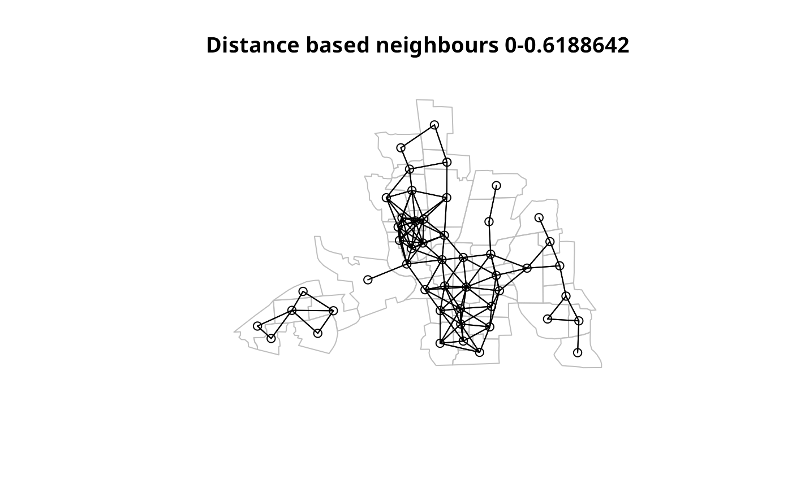
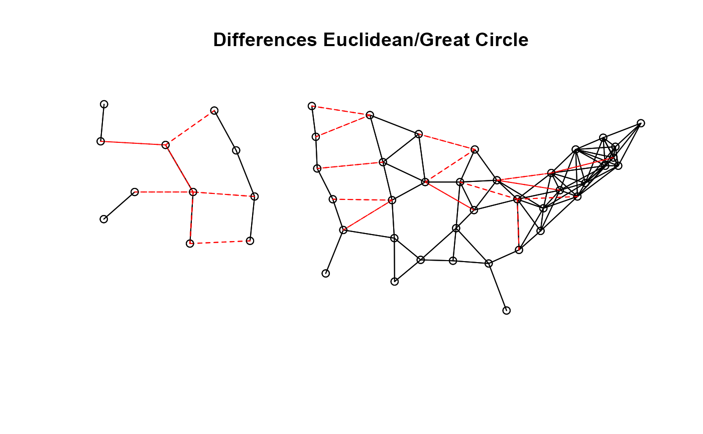

dnearneigh.RdThe function identifies neighbours of region points by Euclidean distance between lower (greater than) and upper (less than or equal to) bounds, or with longlat = TRUE, by Great Circle distance in kilometers.
dnearneigh(x, d1, d2, row.names = NULL, longlat = NULL, bounds=c("GT", "LE"))
| x | matrix of point coordinates or a SpatialPoints object |
|---|---|
| d1 | lower distance bound |
| d2 | upper distance bound |
| row.names | character vector of region ids to be added to the neighbours list as attribute |
| longlat | TRUE if point coordinates are longitude-latitude decimal degrees, in which case distances are measured in kilometers; if x is a SpatialPoints object, the value is taken from the object itself, and overrides this argument if not NULL |
| bounds | character vector of length 2, default |
The function returns a list of integer vectors giving the region id numbers
for neighbours satisfying the distance criteria. See card for details of “nb” objects.
if (require(rgdal, quietly=TRUE)) { example(columbus, package="spData") coords <- coordinates(columbus) rn <- sapply(slot(columbus, "polygons"), function(x) slot(x, "ID")) k1 <- knn2nb(knearneigh(coords)) all.linked <- max(unlist(nbdists(k1, coords))) col.nb.0.all <- dnearneigh(coords, 0, all.linked, row.names=rn) summary(col.nb.0.all, coords) plot(columbus, border="grey") plot(col.nb.0.all, coords, add=TRUE) title(main=paste("Distance based neighbours 0-", format(all.linked), " distance units", sep="")) }#> #> colmbs> if (requireNamespace("rgdal", quietly = TRUE)) { #> colmbs+ library(rgdal) #> colmbs+ columbus <- readOGR(system.file("shapes/columbus.shp", package="spData")[1]) #> colmbs+ plot(columbus) #> colmbs+ } #> OGR data source with driver: ESRI Shapefile #> Source: "/home/rsb/lib/r_libs/spData/shapes/columbus.shp", layer: "columbus" #> with 49 features #> It has 20 fields #> Integer64 fields read as strings: COLUMBUS_ COLUMBUS_I POLYID#> #> colmbs> if (requireNamespace("spdep", quietly = TRUE)) { #> colmbs+ library(spdep) #> colmbs+ col.gal.nb <- read.gal(system.file("weights/columbus.gal", package="spData")[1]) #> colmbs+ } #> Neighbour list object: #> Number of regions: 49 #> Number of nonzero links: 252 #> Percentage nonzero weights: 10.49563 #> Average number of links: 5.142857 #> Link number distribution: #> #> 1 2 3 4 5 6 7 8 9 10 11 #> 4 8 6 2 5 8 6 2 6 1 1 #> 4 least connected regions: #> 5 9 20 46 with 1 link #> 1 most connected region: #> 27 with 11 links #> Summary of link distances: #> Min. 1st Qu. Median Mean 3rd Qu. Max. #> 0.1276 0.3608 0.4566 0.4331 0.5224 0.6189 #> #> The decimal point is 2 digit(s) to the left of the | #> #> 12 | 88 #> 14 | 44 #> 16 | #> 18 | 7788 #> 20 | 0033 #> 22 | 772277 #> 24 | 4488 #> 26 | 8822 #> 28 | 2244 #> 30 | 00334466 #> 32 | 11114444001188 #> 34 | 0033446633 #> 36 | 1133559900335588 #> 38 | 1133668899003355 #> 40 | 44557777222266 #> 42 | 990022333399 #> 44 | 3322777799 #> 46 | 22223344666677001111225588 #> 48 | 00000011222299 #> 50 | 1122888800557799 #> 52 | 22223333446600 #> 54 | 00333377001133556677 #> 56 | 111133446666 #> 58 | 0022337799 #> 60 | 2299111199 #>data(state) us48.fipsno <- read.geoda(system.file("etc/weights/us48.txt", package="spdep")[1]) if (as.numeric(paste(version$major, version$minor, sep="")) < 19) { m50.48 <- match(us48.fipsno$"State.name", state.name) } else { m50.48 <- match(us48.fipsno$"State_name", state.name) } xy <- as.matrix(as.data.frame(state.center))[m50.48,] llk1 <- knn2nb(knearneigh(xy, k=1, longlat=FALSE)) all.linked <- max(unlist(nbdists(llk1, xy, longlat=FALSE))) ll.nb <- dnearneigh(xy, 0, all.linked, longlat=FALSE) summary(ll.nb, xy, longlat=TRUE, scale=0.5)#> Neighbour list object: #> Number of regions: 48 #> Number of nonzero links: 190 #> Percentage nonzero weights: 8.246528 #> Average number of links: 3.958333 #> Link number distribution: #> #> 1 2 3 4 5 7 8 9 10 #> 11 9 4 8 4 4 4 3 1 #> 11 least connected regions: #> 2 4 8 10 24 26 29 32 35 41 45 with 1 link #> 1 most connected region: #> 28 with 10 links #> Summary of link distances: #> Min. 1st Qu. Median Mean 3rd Qu. Max. #> 93.66 293.14 360.45 354.22 448.26 542.97 #> #> The decimal point is 2 digit(s) to the right of the | #> #> 0 | 99 #> 1 | 00112233 #> 1 | 666699 #> 2 | 00222222334444444444 #> 2 | 667788999999 #> 3 | 000000001111111122222222222233333333334444 #> 3 | 555566666677777788888899999999 #> 4 | 0000001111223344 #> 4 | 5555555555556666667777888888888899 #> 5 | 00000011111122334444 #>gck1 <- knn2nb(knearneigh(xy, k=1, longlat=TRUE)) all.linked <- max(unlist(nbdists(gck1, xy, longlat=TRUE))) gc.nb <- dnearneigh(xy, 0, all.linked, longlat=TRUE) summary(gc.nb, xy, longlat=TRUE, scale=0.5)#> Neighbour list object: #> Number of regions: 48 #> Number of nonzero links: 220 #> Percentage nonzero weights: 9.548611 #> Average number of links: 4.583333 #> Link number distribution: #> #> 1 2 3 4 5 6 7 8 9 10 #> 5 9 6 8 5 2 3 3 5 2 #> 5 least connected regions: #> 2 4 8 41 45 with 1 link #> 2 most connected regions: #> 7 28 with 10 links #> Summary of link distances: #> Min. 1st Qu. Median Mean 3rd Qu. Max. #> 93.66 304.16 381.26 371.99 467.80 523.58 #> #> The decimal point is 2 digit(s) to the right of the | #> #> 0 | 99 #> 1 | 00112233 #> 1 | 666699 #> 2 | 00222222334444444444 #> 2 | 667788999999 #> 3 | 000000001111111122222222222233333333334444 #> 3 | 555566666677777788888899999999 #> 4 | 00000011112233334444 #> 4 | 555555555555666666666677778888888888889999 #> 5 | 00000000000000111111111122222222222222 #>xy1 <- SpatialPoints((as.data.frame(state.center))[m50.48,], proj4string=CRS("+proj=longlat +ellps=GRS80")) gck1a <- knn2nb(knearneigh(xy1, k=1)) all.linked <- max(unlist(nbdists(gck1a, xy1))) gc.nb <- dnearneigh(xy1, 0, all.linked) summary(gc.nb, xy1, scale=0.5)#> Neighbour list object: #> Number of regions: 48 #> Number of nonzero links: 220 #> Percentage nonzero weights: 9.548611 #> Average number of links: 4.583333 #> Link number distribution: #> #> 1 2 3 4 5 6 7 8 9 10 #> 5 9 6 8 5 2 3 3 5 2 #> 5 least connected regions: #> 2 4 8 41 45 with 1 link #> 2 most connected regions: #> 7 28 with 10 links #> Summary of link distances: #> Min. 1st Qu. Median Mean 3rd Qu. Max. #> 93.66 304.16 381.26 371.99 467.80 523.58 #> #> The decimal point is 2 digit(s) to the right of the | #> #> 0 | 99 #> 1 | 00112233 #> 1 | 666699 #> 2 | 00222222334444444444 #> 2 | 667788999999 #> 3 | 000000001111111122222222222233333333334444 #> 3 | 555566666677777788888899999999 #> 4 | 00000011112233334444 #> 4 | 555555555555666666666677778888888888889999 #> 5 | 00000000000000111111111122222222222222 #>